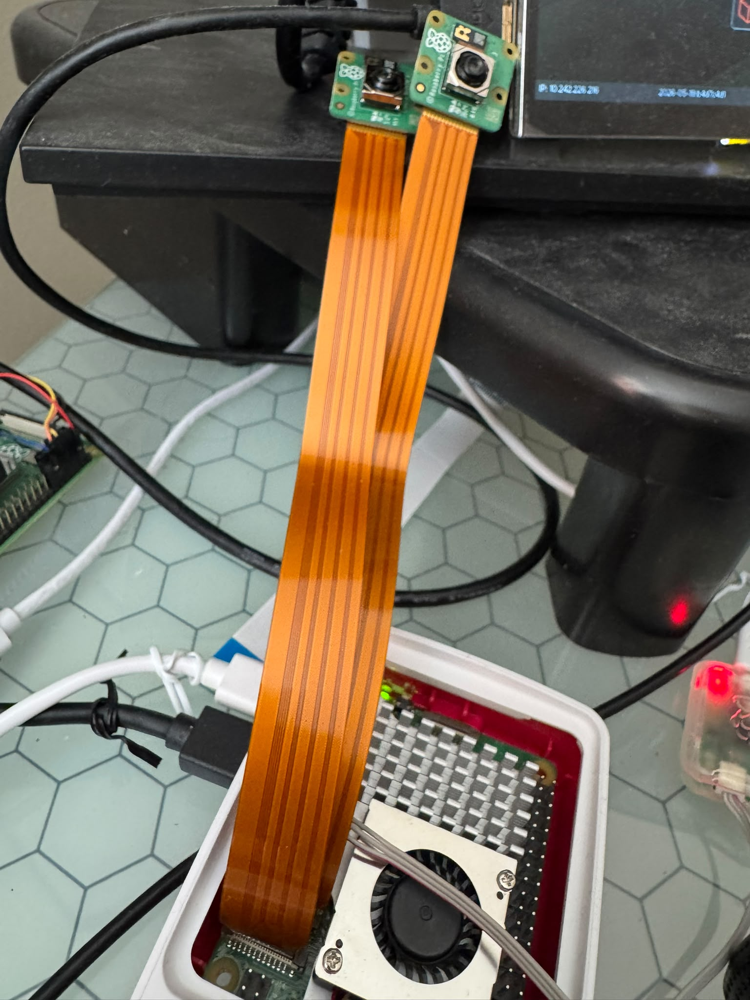
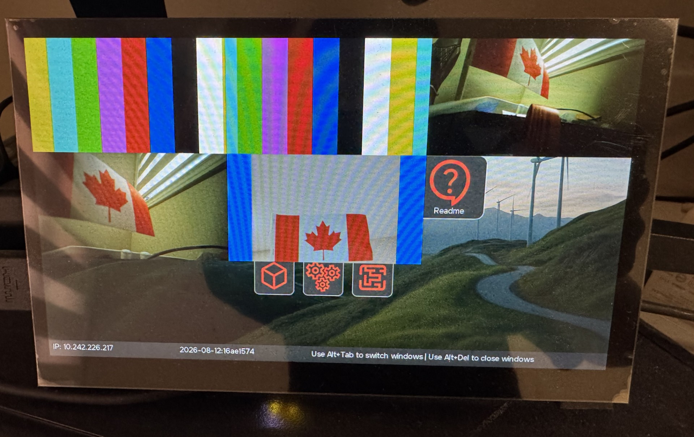

This codelab describes how to configure multiple camera sources on the Raspberry Pi 5. The instructions provided in this codelab enable support for multiple camera inputs.
Hardware
- 1 x Raspberry Pi 5
- 2 x Camera Module 3 units
- 1 x Logitech C920x (or C920)
Quick Start Target Image (QSTI)
- On the host, launch QNX Software Center and install the QSTI image for QNX 8.0.5, for example: com.qnx.qnx800.quickstart.rpi5/0.5.0.00050T202609021847L
- Previous QSTI images, such as the image with QNX 8.0.4, are not compatible with this codelab and should not be used.
- Use Raspberry Pi Imager or another imaging tool to write the image to the SD card.
- Insert the SD card into the Raspberry Pi 5.
- Connect the two Camera Module 3 units and the C920 USB camera.
- Power on the Raspberry Pi 5.
Dependent packages
The required packages are already installed. In the case that you need re-installation, install the following packages:
sudo apk add \
yaml \
libturbojpeg \
qnx-egl \
qnx-gles \
qnx-screen \
qnx-devu-hcd-dwc3-xhci \
qnx-rpi-camera-ipa \
qnx-io-usb-otg \
qnx-usb \
qnx-multimedia-framework \
qnx-sensor-framework \
qnx-sensor-framework-utils \
qnx-sensor-framework-example-configs \
qnx-sf-camera-imx708 \
qnx-sf-platform-broadcom-rpi5
Connect two Camera Module 3 units to the DISP0 and DISP1 ports as shown below:

Connect the Logitech C920x (or C920) to one of the USB ports as shown below:

Verify that the sensor service is running
Run
sudo pidin ar | grep sensor
You should see output similar to the following:
[qnxuser@qnxpi ~]$ sudo pidin ar | grep sensor
913444 sensor -U 521:521 -b external -r /data/share/sensor -c /etc/config/sensor/sensor_rpi5.conf
Verify that the I2C interfaces are configured correctly with -q0xa8, -q0xab and -q0xad
Run
sudo pidin ar | grep i2c-dwc-rpi5
You should see that -q0xa8, -q0xab and -q0xad have been already configured as follows:
[qnxuser@qnxpi ~]$ sudo pidin ar | grep i2c-dwc-rpi5
671765 /system/bin/i2c-dwc-rpi5 -p0x1f00074000 -c200000000 -q0xa8
856098 /system/bin/i2c-dwc-rpi5 -p0x1f00080000 -c200000000 -q0xab
884771 /system/bin/i2c-dwc-rpi5 -p0x1f00088000 -c200000000 -q0xad
Verify that camera sensor devices are available
Run
ls -al /dev/sensor
You should see camera1 through camera5 as follows:
[qnxuser@qnxpi ~]$ ls -al /dev/sensor
total 0
-rw-rw---- 1 521 sensor 0 1970-01-01 00:00 camera1
-rw-rw---- 1 521 sensor 0 1970-01-01 00:00 camera2
-rw-rw---- 1 521 sensor 0 1970-01-01 00:00 camera3
-rw-rw---- 1 521 sensor 0 1970-01-01 00:00 camera4
-rw-rw---- 1 521 sensor 0 1970-01-01 00:00 camera5
-rw-rw---- 1 521 sensor 0 1970-01-01 02:20 data1
-rw-rw---- 1 521 sensor 0 1970-01-01 02:20 data2
Verify that the IRQs are enabled for the two Camera Module 3 units
Run
sudo msix-rp1 | grep -E "I2C4|I2C6|MIPI0|MIPI1"
You should see output similar to the following:
[qnxuser@qnxpi ~]$ sudo msix-rp1 | grep -E "I2C4|I2C6|MIPI0|MIPI1"
11 | I2C4 | -EI | **-Ml | *l
13 | I2C6 | -EI | **-Ml | *l
47 | MIPI0 | -EI | ---Me | -e
48 | MIPI1 | -EI | ---Me | -e
In this configuration, the cameras are assigned as follows:
- camera 1: simulation camera
- camera 2: video playback camera
- camera 3: Camera Module 3 connected to DISP0
- camera 4: Camera Module 3 connected to DISP1
- camera 5: Logitech C920x (or C920) USB camera
Launch the camera_example3_viewfinder for each of the five cameras, one at a time
camera_example3_viewfinder -u 1 &
camera_example3_viewfinder -u 2 &
camera_example3_viewfinder -u 3 &
camera_example3_viewfinder -u 4 &
camera_example3_viewfinder -u 5 &
Verify that the background processes are running
Run
pidin ar | grep camera_example3_viewfinder
You should see output similar to the following:
[qnxuser@qnxpi ~]$ pidin ar | grep camera_example3_viewfinder
1679412 camera_example3_viewfinder -u 1
1683509 camera_example3_viewfinder -u 2
1687606 camera_example3_viewfinder -u 3
1691703 camera_example3_viewfinder -u 4
1687606 camera_example3_viewfinder -u 5
Switch between cameras
If a USB keyboard is connected to the Raspberry Pi 5, you can press Alt + Tab to switch between cameras.
Multiplex the cameras
Stop the camera_example3_viewfinder processes with
slay camera_example3_viewfinder
When prompted, answer Y for each process. You should see output similar to the following:
[qnxuser@qnxpi ~]$ slay camera_example3_viewfinder
slay: usr/bin/camera_example3_viewfinder 1679412 on (tty not known) (y/N)? Y
slay: usr/bin/camera_example3_viewfinder 1683509 on (tty not known) (y/N)? Y
slay: usr/bin/camera_example3_viewfinder 1687606 on (tty not known) (y/N)? Y
slay: usr/bin/camera_example3_viewfinder 1691703 on (tty not known) (y/N)? Y
slay: usr/bin/camera_example3_viewfinder 1687606 on (tty not known) (y/N)? Y
Alternatively, you can force-stop the camera_example3_viewfinder applications without being prompted by using
slay -f camera_example3_viewfinder
You should see output similar to the following:
[qnxuser@qnxpi ~]$ slay -f camera_example3_viewfinder
slay: usr/bin/camera_example3_viewfinder 10252340 on (tty not known)
slay: usr/bin/camera_example3_viewfinder 10256437 on (tty not known)
slay: usr/bin/camera_example3_viewfinder 10260534 on (tty not known)
slay: usr/bin/camera_example3_viewfinder 10264631 on (tty not known)
slay: usr/bin/camera_example3_viewfinder 10268728 on (tty not known)
Test whether the cameras can be multiplexed simultaneously with camera_mux -n N, where N is the total number of cameras to be multiplexed.
However, the fullscreen-winmgr process currently prevents this.
Stop the fullscreen-winmgr process before multiplexing the camera streams.
sudo slay fullscreen-winmgr
Then multiplex the five cameras
camera_mux -n 5
The following image shows five cameras being multiplexed:

Verify the QSTI Image Version
Run the following command to verify the QSTI image version:
sudo use -i /proc/boot/procnto-smp-instr
The output should contain a TAGID indicating QNX OS 8.0.5, for example:
$ sudo use -i /proc/boot/procnto-smp-instr
...
TAGID=QNXOS_805-XXX
...
Verify that the two Camera Module 3 units are detected
Run
sudo slog2info -b sensor_service | grep -E "Camera 3|Camera 4"
You should see output similar to the following:
[qnxuser@qnxpi ~]$ sudo slog2info -b sensor_service | grep -E "Camera 3|Camera 4"
Jan 01 00:00:05.273 sensor_service.852004 debug 1 [ext]int getResolutions(platform_external_handle_t, fsp_sensor_UnitType, fsp_sensor_FormatType, int*, const fsp_sensor_ResType**)(966): Camera 3: 2 resolutions for type 1
Jan 01 00:00:05.273 sensor_service.852004 debug 1 [ext]int getFramerates(platform_external_handle_t, fsp_sensor_UnitType, fsp_sensor_ResType*, fsp_sensor_FormatType, int*, bool*, float*)(1010): Camera 3: rates 1, type 1, resolution 2304 x 1296 maxmin 0
Jan 01 00:00:05.273 sensor_service.852004 debug 1 [ext]int getResolutions(platform_external_handle_t, fsp_sensor_UnitType, fsp_sensor_FormatType, int*, const fsp_sensor_ResType**)(966): Camera 4: 2 resolutions for type 1
Jan 01 00:00:05.273 sensor_service.852004 debug 1 [ext]int getFramerates(platform_external_handle_t, fsp_sensor_UnitType, fsp_sensor_ResType*, fsp_sensor_FormatType, int*, bool*, float*)(1010): Camera 4: rates 1, type 1, resolution 2304 x 1296 maxmin 0
If either of the Camera Module 3 units is not detected, inspect the ribbon cables to ensure that they are firmly connected to the Raspberry Pi 5 ports.
Verify that the Logitech camera is detected
Run usb or usb -vvv for more detailed information.
You should see output similar to the followings:
[qnxuser@qnxpi ~]$ usb
...
USB 1 (XHCI) v10.00, v1.01 DDK, v2.00 HCD, DLL: Active
Device Address : 1
Vendor : 0x046d (Logitech)
Product : 0x08e5 (HD Pro Webcam C920)
Class : 0xef (Miscellaneous)
Subclass : 0x02
Protocol : 0x01
...
[qnxuser@qnxpi ~]$ usb -vvv
...
USB 1 (XHCI) v10.00, v1.01 DDK, v2.00 HCD, DLL: Active
Control, Interrupt, Bulk(SG), Isoch(Stream), High Speed, Super Speed, DMA:32-bit
Device Address : 1
Upstream Host Controller : 1
Upstream Device Address : 0
Upstream Port : 1
Upstream Port Speed : High
Vendor : 0x046d (Logitech)
Product : 0x08e5 (HD Pro Webcam C920)
...